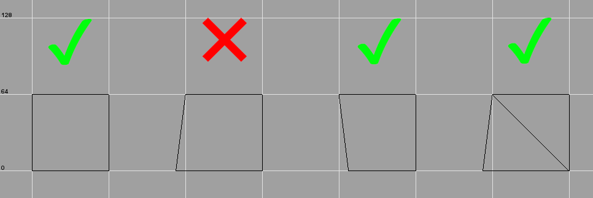
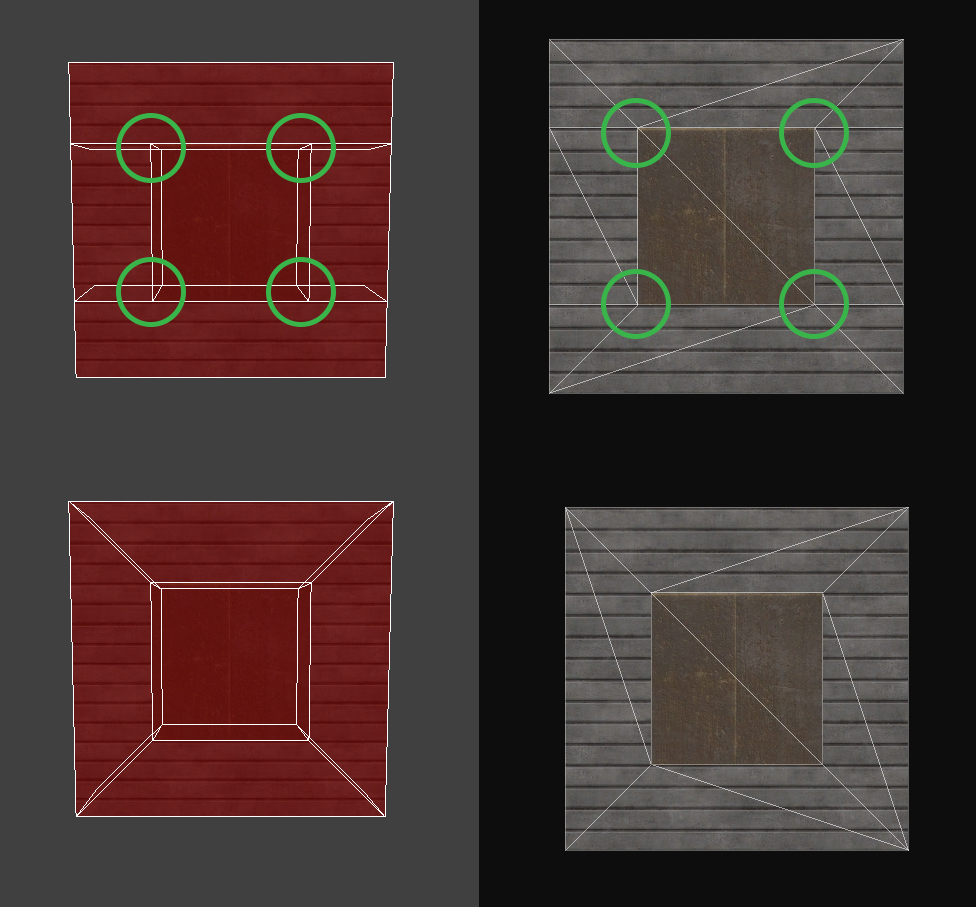

General mapping information
Contents
This page contains general information, limits and sizes that are useful to know when mapping for ETJump. All measurements assume pmove_fixed 1 and com_maxfps 125 unless stated otherwise.
Player sizes
- Player model size (bbox) - 36x36x72 (XYZ)
- This is the size of
info_player_deathmatchentity. - Minimum horizontal clearance - 37 units
- Minimum vertical clearance
- Standing - 73 units
- Crouching - 49 units
- Proning - 41 units
- Jumping - 121 units
Movement
Speed
Ground
| Style | Max speed (units/s) |
|---|---|
| Sprint | 352 |
| Run | 256 |
| Walk | 129 |
| Crouch | 80 |
| Prone | 67 |
| Groundstrafe | 452 |
| Wallstrafe | 442 |
Water
If water level is < half of your height (stance dependant), you are still walking normally but your speed is clamped to 267 units/s.
Following values assume axial yaw. Non-axial yaw can provide higher speeds.
- Swimming in water - 160 units/s
- With 35.5 degree pitch, its possible to swim in water at 195 units/s.
- Swimming on water surface - 196 units/s
- Assuming 0 pitch, water bobbing, pitch and yaw affect this. Possible to achieve ~235 units/s.
Stepup
Stepup happens when you are moving against a vertical wall and are within 18 units (vertically) of the top surface. Stepup doesn't happen if the wall is angled towards you from the bottom, unless the top surface is a seperate brush. The angle of the top does not matter, as long as it's not angleslick.

When stepup can happen, jumping direction from left to right.
Jump height
pmove_fixed 1- 66 units (48 units jump + 18 units stepup)pmove_fixed 0- see table below
| FPS | Height (excl. stepup) | Height (incl. stepup) |
|---|---|---|
| < 125 | 45 | 63 |
| 125/333 | 46 | 64 |
| 250 | 43 | 61 |
| 500 | 54 | 72 |
| 1000 | 36 | 54 |
Jump timing
Note: due to pmove_msec 8, all jump timings have +/- 8ms margin of error.
- Jump delay - 850ms
- Flat ground jump - 712ms
- 41 unit jump - 848ms
- This is the minimum height difference between gamma pads.
- 64 unit jump - 904ms
Fall damage
Fall damage is calculated from falling speed, not height. These measurements assume flat ground to flat ground with standard gravity.
Falling
| Fall damage | Max height |
|---|---|
| 0 hp | 258 units |
| 5 hp | 320 units |
| 7 hp | 386 units |
| 12 hp | 446 units |
| 25 hp | 513 units |
| Death | >514 units |
Jumping
| Fall damage | Max height |
|---|---|
| 0 hp | 209 units |
| 5 hp | 271 units |
| 7 hp | 337 units |
| 12 hp | 398 units |
| 25 hp | 464 units |
| Death | >464 units |
Map limits
Compiler limits
- Maximum amount of surfaces - 131072
- Compiler error - MAX_MAP_DRAW_SURFS (131072) exceeded
- Any visible surface in the map counts towards this limit.
- Maximum size of VIS data - 2MB
- Compiler error - MAX_MAP_VISIBILITY exceeded
- Common error with gamma maps. Q3map2 creates BSP splits every 1024 units, unless worldspawn key
_blocksizeis adjusted. Use 0 to stop q3map2 from automatically creating splits in large open areas. - Maximum amount of T-Junctions - 65536
- Compiler error - MAX_EDGE_LINES
- T-Junction is created when a vertex is placed along an edge. Because all surfaces are chopped into triangles, this forces q3map2 to create an extra split on a surface to connect the vertex to other vertices. In the picture below, T-Junctions are highlighted with green circles. The top row is incorrectly made, while the bottom row is correctly made.

Engine limits
- Maximum amount of entites - 1024
- Game crash - G_Spawn: no free entities
- Some of these are reserved for the game.
- The actual limit for map to be playable is 949, but because the game creates entities on runtime (grenades, bodies, medpacks etc.) you should always leave some headroom.
- Maximum amount of brush entities - 255
- Game crash - CG_RegisterGraphics: Too many inline models: N
- These count towards standard entity limit.
- Maximum amount of remapped shader - 32
- Game crash - G_FindConfigstringIndex: overflow
- This is the amount of unique shaders reserved for remapping on the map.
- Maximum amount of misc_gamemodels - 1024
- Game crash - G_FindConfigstringIndex: overflow
- This assumes static misc_gamemodels.
- Non-static misc_gamemodels count towards standard entity limit.
- Maximum amount of sounds - 255
- Game crash - G_FindConfigstringIndex: overflow
- This is the amount of unique sounds referenced by the map.
Common errors and warnings
- ******* Leaked *******
- Your map has a hole into void. If it looks like the red line indicating the leak spot goes straight through a structural brush, make sure the shader on the brush doesn't have
surfaceparm trans. - Entity N, Brush N: duplicate plane
- Happens when two faces are combined into one by edge or vertex editing. Use brush cleanup to fix.
- Entity N, Brush N: degenerate plane
- Happens sometimes when 2 vertices of same face are very close to each other (under 1 unit) due to usage of clipper. Use brush cleanup to fix; often deletes the brush and you have to recreate it.
- BaseWindingForPlaneAccu: no dominant axis found because normal is too short
- Related to degenerate plane error. Use brush cleanup to fix.
- Entity N, Brush N: degenerate patch
- This can often happen when capping patches. This always happens when you try to cap a cone; Radiant creates a 0x0 cap at the sharp end of the cone, which is a degenerate patch. Delete the patch by selecting it via the error window or by going to Misc -> Find brush... and entering the correct entity/brush number.
- Backwards tree volume
- All brushes in your map are detail brushes.
- SV_SetBrushModel: NULL
- Most likely cause for this is an improper usage of a special shader in an entity. For example, using an
originshader fortrigger_multipleentity causes this error. Another cause is corrupted brushwork in a brush entity, which can be fixed with brush cleanup.
Common shaders
This list contains common shaders that are useful for ETJump mapping. This is not a comprenesive list; it only includes stuff thats relevant and actually works. Clip shaders for example have variations with different surface sounds, but they are self-explanatory and are not listed here.
Stock ET
skip.
skip.
hint brushes, use this on every surface where you don't want a portal to be created.
skip, but filters with hint in Radiant.
nodraw, but doesn't explicitly make the brush detail.
ETJump
If you don't see these shaders in Radiant, make sure you have the latest ETJump mapping assets, available here.

nodrawwater, except has slightly lower acceleration scale (0.3 vs 0.5). This is technically a stock shader, but it's not shipped with Radiant.